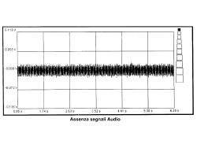
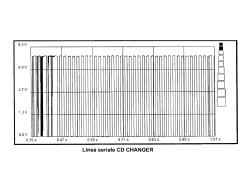

|
Foreword: To carry out this check a music compact disc must be inserted in the tray (with the legible part correctly positioned). Mastered CDs may be difficult or impossible to play. Test with original or good quality mastered CDs. CDRs can be played, but not MP3 CDs. If there is interference whilst playing CDs, check the screening of the audio connecting cable between the player and the Connect. CHECK LEFT AND RIGHT AF OUTPUT SIGNALS FROM CD CHANGER After having selected a track on a music Compact Disc, place the black voltmeter probe to pin 18 of the 20-way Connect connector (I) and the red probe alternately at the Connect signal input cables (pin 20 - right AF signal and pin 19 left AF signal). Select a 20V end of scale and 5 seconds on the Examiner (Voltmeter mode). Press the Start button and take the reading: the values obtained should be similar to the ones in the diagram below. If the signal is similar to the one shown in the diagram, this means that the CD Changer is sending the audio signals correctly. Continue with the check on the radio input signal. If this does not take place, check that the signal is not similar to the one shown in the diagram below.  If the audio signals to the Connect radio are not present, check that the activation signal coming from the radio and the correct power supply are present at the CD Changer connector. If this is the case, continue checking the continuity and the insulation to earth of the following wiring:
CHECK SERIAL LINE FOR COMMUNICATION WITH CD CHANGER After having selected a track on a music Compact Disc, position the black voltmeter probe to earth and the red probe alternately at pin 13 and 14 of the Connect 20-way connector. Select a 20V end of scale and 5 seconds on the Examiner (Voltmeter mode). Press the Start button and take the reading: the values obtained for both measurements should be similar to the ones in the diagram below.  |